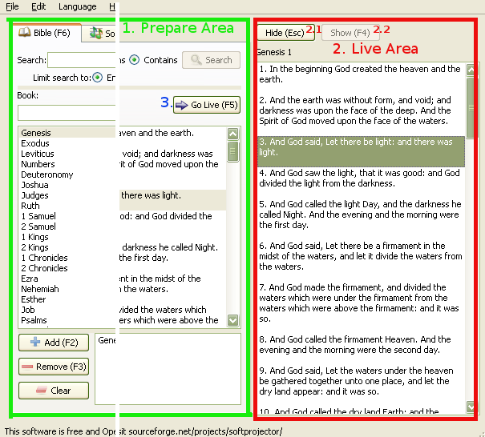

2.1 Showing - General Information

softProjector is designed as 3 part; the prepare area, live area; and
the "Go Live" button.
1. Prepare Area:
This is the area where the user finds the Bible verse, song, or other media
that he would like to show. Anything done in this area will not affect what
is showing until "Go Live" button is clicked.
2. Live Area:
After "Go Live" button has been clicked, the selected Bible chapter/song is
populated in the show list. While "Show" is checked, changing selected any
item from the list will change what is shown, it will show currently
selected item. Double clicking on the show list will activate "Show" button
and send selected item to be shown.
When "Hide" button is clicked, it becomes checked and "Show" button becomes unchecked. The display screen clears all the text and background goes from active to passive.
"Show" button is automatically checked when "Go Live" button is pressed. When "Show" button is clicked, it becomes checked and "Hide" button becomes unchecked. The display screen background switches from passive to active and newly selected item in the show list.
3. "Go Live" Button:
"Go Live" button has the same function on all tab. It send prepared Bible
verse / Song / etc. to be shown. After it is clicked, the show list get
repopulated with new information and proper items gets selected, "Show"
button is activated and the verse is shown.